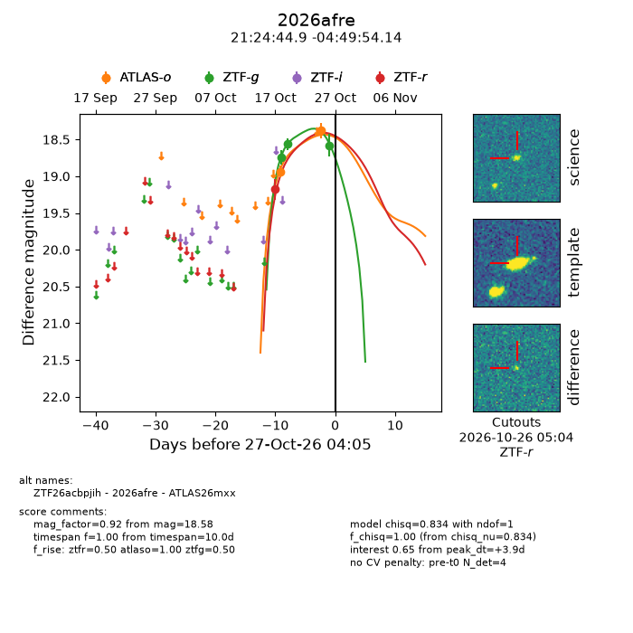
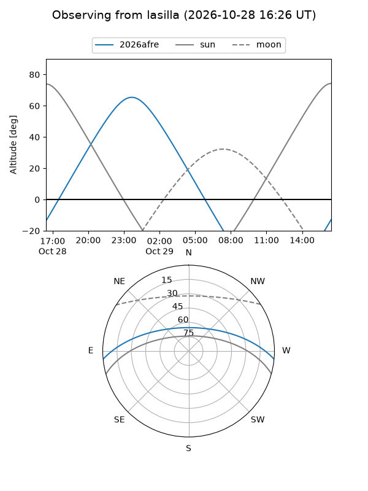
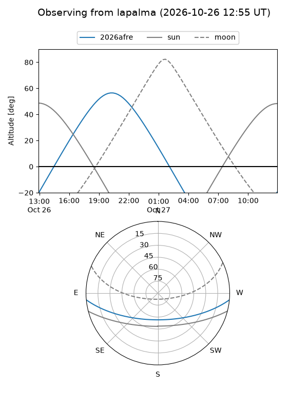
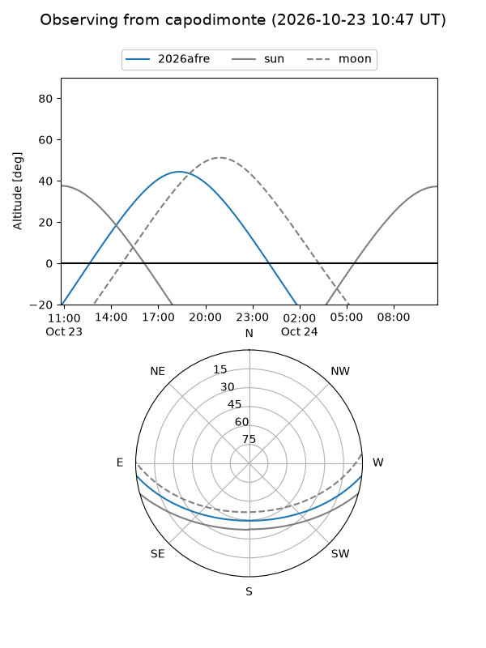
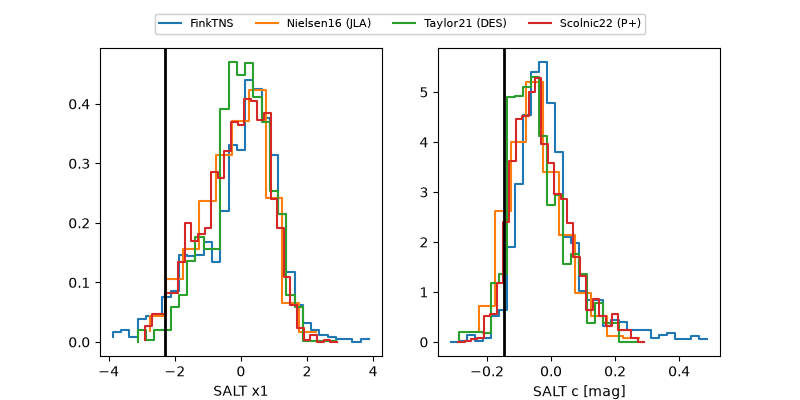

2026afre
Target 2026afre at 2026-10-27 04:06
Aliases and brokers:
FINK-ZTF: ztf.fink-portal.org/ZTF26acbpjih
Lasair-ZTF: lasair-ztf.lsst.ac.uk/objects/ZTF26acbpjih
ALeRCE-ZTF: alerce.online/object/ZTF26acbpjih
YSE-PZ: ziggy.ucolick.org/yse/transient_detail/2026afre
TNS name: wis-tns.org/object/2026afre
Direct TNS query: direct search
alt names
ZTF26acbpjih (ztf,fink_ztf)
2026afre (tns,yse)
ATLAS26mxx (atlas)
Coordinates:
equatorial (ra, dec) = 321.1870,-4.83170
equatorial (HMS+DMS) = 21:24:44.87,-04:49:54.14
galactic (l, b) = (47.7512,-36.04191)
Flags:
peak dt: +3.9
Photometry:
last atlaso=18.38, ztfg=18.58, ztfr=19.18
2 atlaso, 3 ztfg, 1 ztfr detections
Lightcurve

Visibility



Additional plots
